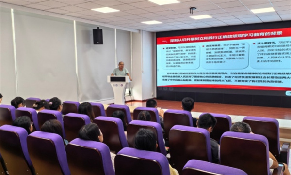

学院通知 · 科研创新
我院口腔疾病防治全国重点实验室第一党支部开展树立和践行正确政绩观学习教育专题党课
发布时间：2026/07/07
为贯彻落实树立和践行正确政绩观学习教育部署要求，6月26日，我院口腔疾病防治全国重点实验室第一党支部组织开展树立和践行正确政绩观学习教育专题党课。本次党课由党支部书记李雨庆同志主讲，支部全体党员参会学习。 党课围绕“政绩为谁而树、树什么样的政绩、靠什么树政绩”的核心问题，结合全国重点实验室职能定位与工作实际，系统讲解了树立和践行正确政绩观学习教育的时代背景、总体要求和实践路径，内容贴合科研工作实际、指导性强。学习过程中，与会党员结合自身岗位，从人才培养、科研创新、医疗服务、师生服务等方面展开深入研讨，交流学习感悟、明晰工作方向。 通过本次专题党课，支部党员进一步筑牢思想根基，纷纷表示将持续锤炼党性修养，树牢正确的育人观、科研观、医疗观和服务观，将正确政绩观融入日常各项工作全过程，以扎实的工作成效助力我院口腔疾病防治事业迈上新台阶。 标签：
